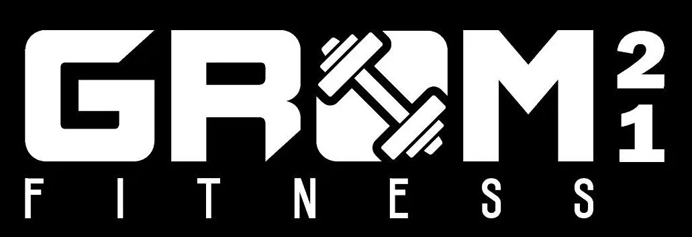

espacioGYM · GROM 21
Plataforma Web Progresiva y Microservicios Cloud para la Gestión Integral de Gimnasios Asistida por IA
Avances en el Proyecto con Respecto al MVP
Línea base inicial (Sprint 1) frente al incremento transaccional completo evaluado en la Segunda Entrega (Sprints 2 y 3)
- Portal web informativo institucional y catálogo estático de tarifas.
- Consulta de ubicación mediante Google Maps e información de horarios.
- Autenticación básica de clientes (Email/Password y Google OAuth).
- Perfil básico del socio sin operaciones transaccionales ni agendamientos.
- Limitación del MVP: Sin persistencia de reservas, sin torniquete QR, sin mailing transaccional ni estados de cuenta.
- Agendamiento Transaccional (
/agendar): Control de cupos por turno y actividad. - Pase de Acceso QR Vectorial: Generación instantánea para torniquete de recepción.
- Registro de Asistencia (
/asistencia): Validación de sesión y registro de presencia. - Mailing Automático: Despacho de confirmación transaccional vía Brevo REST API (puerto 443).
- Membresías Cloud: Persistencia relacional ACID y cálculo de vigencias en SQLite en Render.
- Coach Virtual IA: Orquestador de planes asistidos por Google Gemini 3.5 Flash.
Mapeo de Historias de Usuario (Jira / Scrum)
Trazabilidad oficial de requerimientos desde el Product Backlog hacia los componentes Angular y servicios Backend
| Fase / Entrega | Sprint | Clave Jira | Historias de Usuario Cubiertas | Estado en Código |
|---|---|---|---|---|
| MVP Inicial | Sprint 1 | SCRUM-16..22, 40 |
HU-01 a HU-08 · Portal público, ubicación Maps, catálogo estático, redes y autenticación (Email + Google OAuth) | Línea Base (100%) |
| 2da Entrega | Sprint 2 | SCRUM-24..26 |
HU-10, 11, 12 · Alta de membresías, consulta de vigencia sincronizada y renovación transaccional | Terminada (100%) |
| Sprint 2 | SCRUM-27..29 |
HU-15, 16, 17 · Registro de pagos, historial de transacciones y estados de cuenta en cliente | Terminada (100%) | |
| Sprint 3 | SCRUM-31..33 |
HU-23, 24, 25 · Reserva de sesiones (/agendar), pase QR dinámico, registro de asistencia (/asistencia) e historial |
Terminada (100%) | |
| Sprint 3 | SCRUM-34..36 |
HU-18, 20 · Rutinas personalizadas con Coach Virtual IA (Google Gemini 3.5 Flash) y consulta de planes | Terminada (100%) | |
| Sprint 3 | SCRUM-41..43 |
HU-27, 28, 29 · Panel de control gerencial con gráficas de afluencia por día y ocupación de horarios (/graficos) |
Terminada (100%) |
Modularidad de la Aplicación Móvil (Angular 19)
Estructura organizada en 5 capas desacopladas, Service Worker oficial y 76 activos WebP
app.config.ts · Lazy Loading · SW
• Service Worker (ngsw-worker.js): Precaché determinista de recursos estáticos según ngsw-config.json para carga ultrarrápida.
• Optimización de Rendimiento: 76 imágenes convertidas a formato .webp, reduciendo el ancho de banda transferido en un 60%.
• Manifiesto Web: Configurado en modo standalone con iconos adaptativos para instalación nativa en smartphones Android e iOS.
Arquitectura de Servicios Web: Backend en Render
Microservicio Node.js 22 LTS + Express y Notificaciones Brevo HTTPS
• Restricción Perimetral en la Nube: Plataformas como Render bloquean por política de red los puertos TCP salientes 25, 465 y 587 para evitar spam. Nodemailer generaba timeouts de 40+ segundos.
• Decisión Técnica: Migración completa hacia la API REST HTTPS de Brevo v3 (puerto 443) usando llamadas fetch nativas en Node 22.
• Rendimiento: Latencia reducida a menos de 800 milisegundos con confirmación vía identificador transaccional (messageId).
• GET /api/health ➔ Estado de salud y tiempo de actividad del backend.
• GET /api/membership ➔ Consulta de vigencia sincronizada en la nube.
• POST /api/membership ➔ Alta y actualización de plan de entrenamiento.
• POST /api/membership/renew ➔ Renovación de vigencia del usuario.
• POST /api/enviar-correo ➔ Despacho de confirmación con folio de reserva.
• GET /api/ai/status ➔ Telemetría activa del Circuit Breaker de IA.
/api/health en Render ↗
Estructura de Base de Datos Centralizada: SQLite Relacional
Motor SQL ACID unificado en Render Cloud para sincronización en tiempo real y consistencia transaccional
Justificación: Modelo relacional unificado en el backend con integridad referencial y cero sobrecarga de red externa.
- Tabla
users(cuentas, roles y auth) - Tabla
memberships(planes y vigencias) - Tabla
bookings(reservas transaccionales) - Tabla
attendances(asistencia física)
Justificación: Evitar condiciones de carrera al reservar cupos simultáneos y garantizar durabilidad en cobros.
- Transacciones atómicas en agendamientos
- Write-Ahead Logging (WAL) para lecturas concurrentes
- Cálculo dinámico de estadísticas agrupadas
Justificación: Resiliencia y disponibilidad local de pases QR y catálogos en zonas del gimnasio sin cobertura celular.
- Copia local de respaldo ante pérdida de red
- Token JWT con expiración segura
- Sincronización automática al recuperar señal
Estrategia de Seguridad: Resguardo en Render y Defensa
Protección perimetral, control de accesos y credenciales seguras en variables de entorno
• HTTPS Forzado (TLS 1.3): Cifrado de extremo a extremo.
• Mitigación DDoS: Proxy perimetral de Render y GitHub.
• Cabeceras HTTP: Protección contra Clickjacking y Sniffing.
• JWT Criptográfico: Tokens firmados con HMAC-SHA256 (24h de expiración).
• Control de Acceso: Separación estricta de roles (Admin, Entrenador, Socio).
• Sanitización Angular: Protección nativa del DOM contra ataques XSS.
• Cero Secretos en Repositorio: Las credenciales activas (GEMINI_LLAVE, MERCURY_API_KEY, BREVO_API_KEY) residen exclusivamente en las Variables de Entorno seguras de Render (process.env) y GitHub Secrets.
• Rotación y Resiliencia: Clave Gemini renovada y vinculada dinámicamente como GEMINI_LLAVE en el dashboard cloud sin tocar el código fuente.
• TruffleHog en CI: Escaneo criptográfico de commits evitando filtración de credenciales.
Coach Virtual IA: Google Gemini 3.5 Flash & Mercury
Orquestador con Circuit Breaker para garantizar tolerancia a fallos en el servicio
Inferencia ultra veloz especializada en generación de rutinas periodizadas estructuradas según objetivos físicos y grupos musculares.
Si el proveedor primario responde error de autenticación (401), cuota agotada (429) o timeout, el circuito se abre automáticamente por 5 minutos.
El tráfico conmuta inmediatamente hacia el modelo oficial Google Gemini 3.5 Flash (gemini-3.5-flash) sin interrupción para el socio.
/api/ai/status) ↗
Pipeline Automatizado en GitHub Actions (Run #69)
Flujo declarativo en .github/workflows/ci.yml en runners Ubuntu 24.04 LTS con toolchain nativo Node 24
Compilación AOT en Angular 19 de producción. Verificación estricta con ESLint eliminando advertencias y tipos any de raíz.
156 pruebas unitarias ejecutadas exitosamente con Karma + Jasmine en Chrome Headless sobre Linux. 100% éxito sin fallos.
39 especificaciones de servicios ejecutadas con HttpClientTestingModule y generación de cobertura automatizada.
Análisis de dependencias con npm audit y escaneo criptográfico de historial con TruffleHog.
Construcción Docker multi-stage (Angular + Express) y publicación a GitHub Packages (ghcr.io).
Publicación automática a GitHub Pages vía actions/deploy-pages@v5 y webhook continuo a Render.
Empaquetado Docker y GitHub Container Registry (GHCR)
Construcción multi-stage reproducible y publicación automatizada de imágenes OCI para Frontend y Backend
• Builder: Compilación optimizada en Node.js 22 LTS generando bundles con precaché PWA.
• Runner Ultraligero: Transfiere únicamente los artefactos estáticos hacia Nginx Alpine, logrando una imagen final compacta y segura de menos de 45 MB.
• Imagen en GHCR: ghcr.io/jefazo-isc/gymseminario:latest
• Runtime Nativo: Contenedor Node 22 Alpine empaquetando el servidor Express, la base de datos relacional y los adaptadores de IA.
• Build Resiliente: Instalación de dependencias de producción sin requerir acoplamiento a lockfiles locales en CI.
• Imagen en GHCR: ghcr.io/jefazo-isc/gymseminario-server:latest
Demostración Práctica del Sistema en Vivo
Flujo completo de extremo a extremo comprobable en entornos de producción en GitHub Pages y Render Cloud
El socio selecciona actividad, fecha y turno en la PWA. El sistema genera el folio único, envía correo transaccional vía Brevo y renderiza el código QR vectorial para torniquete.
🔗 Abrir Módulo de Agendamiento (/agendar) ↗
Formulario de registro de presencia para socios y entrenadores, con validación de sesión autenticada y confirmación de recepción en el backend.
🔗 Probar Registro de Asistencia (/asistencia) ↗
Consulta de planes, fechas de corte y cálculo de vigencias sincronizadas con la base de datos relacional de Render respaldada con caché local.
🔗 Consultar Membresías Cloud (/membresias) ↗
Visualización interactiva de afluencia por día, porcentaje de ocupación por turno y KPIs operativos para toma de decisiones gerenciales.
🔗 Ver Panel de Gráficos (/graficos) ↗
Conclusiones y Trabajo Futuro (Tercera Entrega)
Cumplimiento del 100% de la Segunda Entrega y proyección a la Entrega Final
- 100% de los criterios de la rúbrica institucional sustentados en código.
- Pipeline CI/CD con 156 pruebas automáticas en Chrome Headless.
- Servicios Web transaccionales con Brevo HTTPS y QR dinámico.
- Persistencia híbrida en producción con SQLite relacional y Firestore.
- PWA instalable con Service Worker oficial y 76 activos WebP.
- Hardware físico de torniquete: lector de código QR con microcontrolador ESP32.
- Pasarela de cobro recurrente con tarjeta mediante Stripe SDK.
- Sincronización offline bidireccional avanzada con IndexedDB.
- Analítica visual de aforo y ocupación mediante visión computacional.
¡Muchas Gracias por su Atención!
Sesión de preguntas y retroalimentación técnica con el Dr. Arturo Elías Ramírez.